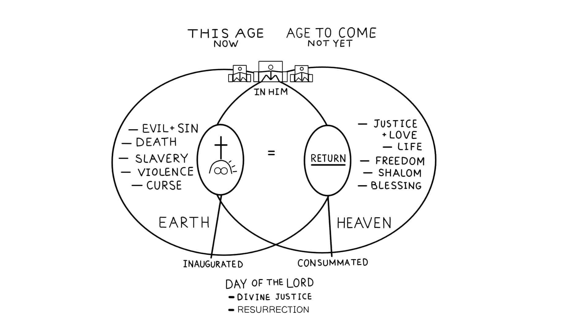

Sessão 13: Da Morte para a VidaSession 13: From Death to Life
Principais LiçõesKey Takeaways
- Nos movimentos paralelos de Efésios 2 (2:1-10 e 2:11-22), vemos o predicado anterior, os agentes da morte, a intervenção de Deus e o resultado da nova criação — o primeiro de perspectiva cósmica, o segundo de aliança.In the parallel movements of Ephesians 2 (2:1-10 and 2:11-22), we see the former predicament, agents of death, God's intervention, and the new creation result — the first cosmic, the second covenantal.
- Identidades que dividem pessoas são irrelevantes porque temos nova identidade em Jesus.Identities that divide people are irrelevant because we have a new identity in Jesus.
- Efésios 2:8 não é sobre o indivíduo; Paulo aplica o versículo aos relacionamentos sociais dentro de uma comunidade de igreja.Ephesians 2:8 is not about the individual; Paul applies it to social relationships within a church community.
Do Morto Vivo ao Membro do Templo MessiânicoFrom the Living Dead to Membership in the Messianic Temple
Fluxo de Pensamento em Efésios 2:1-22Flow of Thought in Ephesians 2:1-22
Esta seção contém dois grandes movimentos paralelos. Cada parte começa descrevendo o passado sombrio dos leitores não-judeus e seu movimento para o novo destino no Messias. Cada parágrafo aborda suas antigas identidades sobrepostas contadas em duas histórias. Efésios 2:1-10: sua identidade humana dentro do cosmos, da morte à vida e governo [Gên. 1-2]. Efésios 2:11-22: sua identidade gentílica entre as nações, de forasteiros ao povo da aliança de Deus a uma nova humanidade messiânica [Isaías]. Paulo desenhou cada um desses movimentos para correr em paralelo.This section contains two larger movements that are set in parallel. Each part begins by describing the dismal past of the letter's non-Jewish readers and their move toward their new destiny in the Messiah. Each paragraph addresses their former, overlapping identities told in two stories. Ephesians 2:1-10: Their human identity within the cosmos, from death to resurrection life and rule [Gen. 1-2]. Ephesians 2:11-22: Their gentile identity among the nations, from outsiders to God's covenant people to one new messianic humanity [Isaiah]. Paul has designed each of these movements to run in parallel.
Movimentos em Efésios 2Movements in Ephesians 2
2:1-10 (perspectiva cósmica): predicamento anterior — 2:1-3 "vós estáveis mortos em transgressões e pecados, em que noutro tempo andastes... fazendo a vontade da carne"; agentes da morte — 2:2 "o príncipe da potestade do ar, o espírito que agora opera nos filhos da desobediência"; intervenção de Deus — 2:4-8 "Mas Deus, que é riquíssimo em misericórdia... nos vivificou juntamente com Cristo... pela graça sois salvos"; resultado da nova criação — 2:5-6 "nos fez vivos juntamente com Cristo... e nos ressuscitou e nos fez assentar nos lugares celestiais". 2:11-22 (perspectiva da aliança): predicamento anterior — 2:11-12 "lembrar que noutro tempo... sem Cristo, estranhos à comunidade de Israel, estrangeiros das alianças da promessa"; agentes da divisão — 2:14-15 "a parede de separação, a inimizade... a lei dos mandamentos em ordenanças"; intervenção de Deus — 2:13 "agora em Cristo Jesus, vós, que antes estáveis longe, fostes aproximados pelo sangue de Cristo"; resultado — 2:14-18 "fez de ambos um só... para criar em si mesmo um novo homem … por meio dele ambos temos acesso, por um só Espírito, ao Pai".2:1-10 (cosmic perspective): former predicament — 2:1-3 "you were dead in transgressions and sins, in which at that time you walked… doing the desires of the flesh"; agents of death — 2:2 "the ruler of the authority of the air, the spirit now at work in the sons of disobedience"; God's intervention — 2:4-8 "But God, being rich in mercy… made us alive together with the Messiah… by grace you have been saved"; new creation result — 2:5-6 "He made you alive together with the Messiah… and raised you up together and seated you together in the heavenly realms". 2:11-22 (covenantal perspective): former predicament — 2:11-12 "remember, at that time, you nations in the flesh… estranged from the citizenry of Israel, foreigners of the covenants of promise, without hope and without God in the world"; agents of division — 2:14-15 "the dividing wall, the hostility… the Torah consisting of commands with decrees"; God's intervention — 2:13 "but now in Messiah Jesus, you who were far have been brought near by the blood of the Messiah"; result — 2:14-18 "He made both groups into one… in order that in himself he might create one new man … through him we both have access by the one Spirit to the Father".
Ele também projetou cada movimento para funcionar por si só como uma simetria retórica, de modo que a primeira metade declara as realidades negativas, que então são invertidas na segunda metade do parágrafo.He has also designed each movement to work by itself as a rhetorical symmetry so that the first half states the negative realities, which are then reversed in the paragraph's second half.
Movimentos em Efésios 2. Criado por Tim Mackie para BibleProject Classroom: Efésios (2019).Movements in Ephesians 2. Created by Tim Mackie for BibleProject Classroom: Ephesians (2019).
Simetria Retórica em Efésios 2Rhetorical Symmetry in Ephesians 2
Passado negativo — Efésios 2:1-2 «vós estáveis mortos em vossas transgressões e pecados, nos quais, naquele tempo, andastes» (2:1-10), e 2:11-12 «éreis gentios na carne… sem o Messias, estranhos à cidadania de Israel… sem Deus no mundo» (2:11-22). Transição messiânica — 2:4-5 «Mas Deus… vos vivificou juntamente com o Messias» (2:1-10), e 2:13-15 «Mas agora em Jesus Messias, vós que estáveis longe, fostes aproximados pelo sangue do Messias… para criar os dois numa nova humanidade» (2:11-22). Presente positivo — 2:10 «pois sois… criados em Jesus Messias para boas obras, as quais Deus de antemão preparou, para que nelas andásseis» (2:1-10), e 2:19 «Assim, pois, já não sois estranhos… mas concidadãos e membros da família de Deus» (2:11-22).Negative past — Ephesians 2:1-2 "You were dead in your transgressions and sin which, at that time, you walked in them" (2:1-10), and 2:11-12 "You were gentiles in the flesh… without the Messiah, estranged from the citizenry of Israel… without God in the world" (2:11-22). Messianic transition — 2:4-5 "But God… made you alive together with the Messiah" (2:1-10), and 2:13-15 "But now in Messiah Jesus you who were far away have been brought near by the blood of the Messiah… to create the two into one new humanity" (2:11-22). Positive present — 2:10 "You are… created in Messiah Jesus for good works which God has prepared beforehand, so that we would walk in them" (2:1-10), and 2:19 "Therefore you are no longer estranged… but fellow citizens and members of God's household" (2:11-22).
Simetria Retórica em Efésios 2. Criada por Tim Mackie para BibleProject Classroom: Efésios (2019).Rhetorical Symmetry in Ephesians 2. Created by Tim Mackie for BibleProject Classroom: Ephesians (2019).
Da Morte Viva para a Nova Criação: Tradução e Design Literário de Efésios 2:1-10From Living Death to New Creation: Translation and Literary Design of Ephesians 2:1-10
Tradução livre de Efésios 2:1-10: 1 E vós, estando mortos em vossas transgressões e pecados, nos quais noutro tempo andastes segundo a presente era deste mundo, segundo o príncipe da potestade do ar, o espírito que agora opera nos filhos da desobediência — entre os quais também todos nós antigamente vivíamos pelas paixões da nossa carne, fazendo a vontade da carne e dos pensamentos, e éramos por natureza filhos da ira, como também os demais. 4 Mas Deus, sendo rico em misericórdia, por causa do grande amor com que nos amou, 5 e estando nós mortos em nossas transgressões, nos vivificou juntamente com o Messias — pela graça sois salvos — 6 e nos ressuscitou juntamente e nos assentou juntamente nos lugares celestiais em Jesus Messias, 7 para mostrar nas eras que hão de vir a suprema riqueza da sua graça, pela benignidade para conosco em Jesus Messias. 8 Pois pela graça sois salvos, por meio da fé, e isso não vem de vós, é dom de Deus — 9 não de obras, para que ninguém se glorie. 10 Porque somos feitura sua, criados em Jesus Messias para boas obras, as quais Deus de antemão preparou, para que nelas andásseis.1 And y'all,
being dead in y'all's transgressions and sins,
2 in which at one time y'all walked
according to the age of this world,
according to the ruler of the authority of the air,
the spirit who is now working
in the sons of disobedience,
3 among whom we also all used to live
by the passions of our flesh,
doing the will of the flesh and the mindsets,
and we were by nature children of wrath,
as also were the rest.
4 But God,
being rich in mercy,
because of the great love
with which he loved us,
5 and we,
being dead in our transgressions,
he made us alive together with the Messiah
—by grace y'all have been saved—
6 and he raised us up together
and sat us together
in the heavenlies
with Messiah Jesus
7 in order that he might demonstrate
in the ages which are coming
the surpassing richness of his grace,
by kindness to us in Messiah Jesus.
8 For it is by grace
that y'all have been saved,
through trust,
and this is not from yourselves,
it is the gift of God
9 [it is] not from works,
in order that no one can boast.
10 For we are his handiwork,
having been created in Messiah Jesus
for good works
which God prepared beforehand,
so that we would walk in them.
Efésios 2:1-10. Tradução e Design Literário por Tim Mackie para BibleProject Classroom: Efésios (2019).Ephesians 2:1-10. Translation and Literary Design by Tim Mackie for BibleProject Classroom: Ephesians (2019).

Pergunta de ReflexãoReflection Question
Efésios 2:8 é frequentemente entendido principalmente de forma individualista. É assim que você o leu no passado? De que maneiras ver este versículo aplicado aos relacionamentos sociais dentro de uma comunidade mudou o seu entendimento?Ephesians 2:8 is often understood primarily as individualistic. Is that how you've read it in the past? In what ways has seeing this verse applied to social relationships within a community changed your understanding?